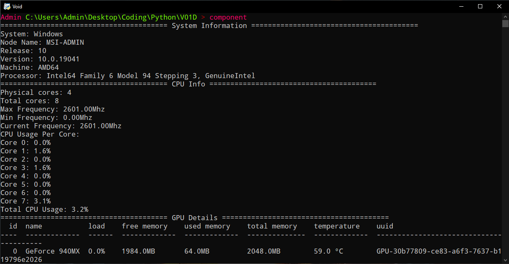
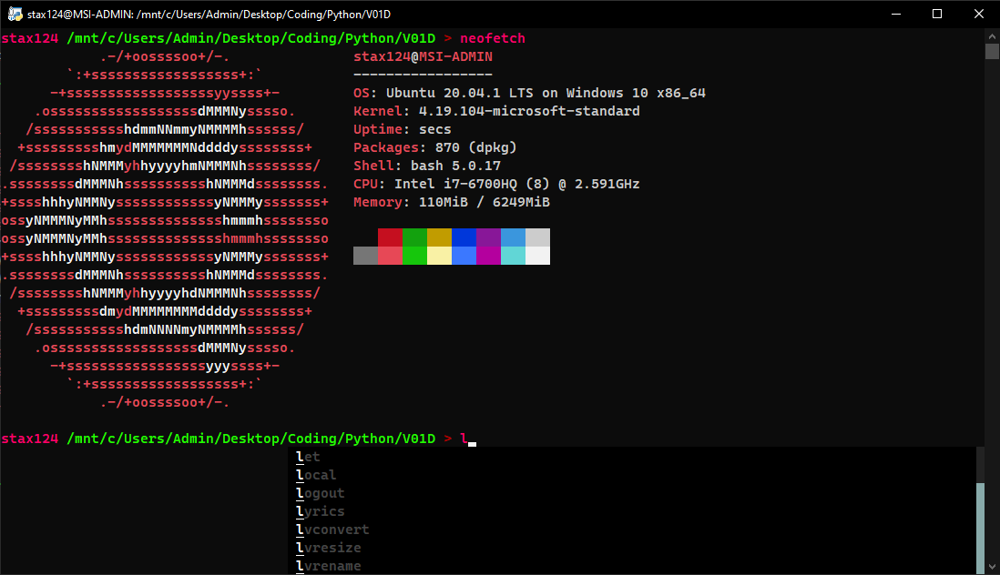

About
V01D is Python3 based terminal currently working on Windows.
It offers portability, quick access and a lot of features including calculator, hashing functions (md5, sha1, sha224, sha256, sha384, sha512), wifi password recovery, quick access to Windows administrative functions, hardware info, Windows powerscheme change, ping test and can also proccess all commands that powershell or command line can do.
More functions will come soon.
Autocompletion
Modern autocompletion style with multithreading support functions as fast cheatsheet for all commands you need

Components
Easy way to find, what components you have in your rig

OS commands integration
Anything that your cmd and powershell can do. In most cases even what Linux terminal is able to if you are running it.
